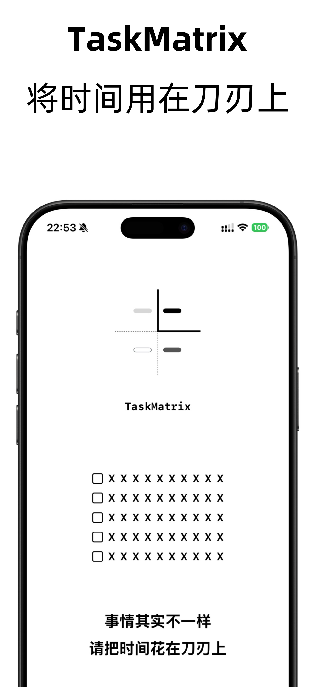
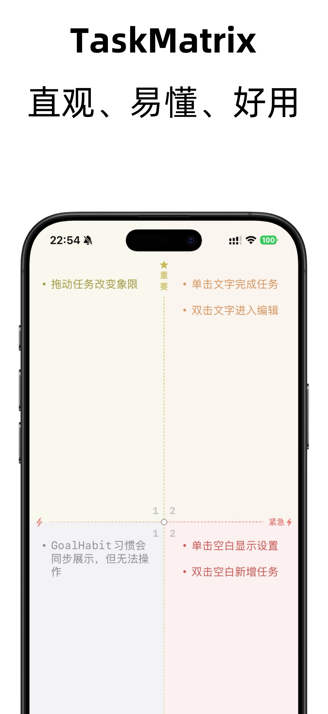

团队效率
TaskMatrix
TaskMatrix 将经典的“重要/紧急”四象限方法与现代协同体验结合，帮助个人与团队建立聚焦、透明、可复盘的工作节奏。
- 自定义象限模板和看板视图，适配不同项目阶段。
- 自动提醒、优先级标记、进度燃尽图，确保重要事项按时推进。
- 支持成员评论与文件同步，让团队沟通留痕更高效。


以原型为基础的界面示例，展示四象限与统计功能。
核心能力
象限智能调度
根据任务完成情况与截止时间自动调整优先级，减少人工维护负担。
节奏化复盘
周/月度复盘模板、回顾摘要与趋势分析帮助团队沉淀经验。
集成生态
可与主流日历、IM、云盘对接，让信息流贯通在同一工作台。
权限与安全
细粒度权限控制、操作日志与企业级加密保障数据安全。
适用团队
- 需要清晰优先级的项目团队，如产品、市场、内容、研发协作。
- 正在推行 OKR 或季度目标管理的中小企业。
- 个人自由职业者与助理协同，快速梳理每日焦点。
- 希望在碎片化沟通中保持结构化记录的远程团队。
产品运营
创意团队
远程协作
个人效率